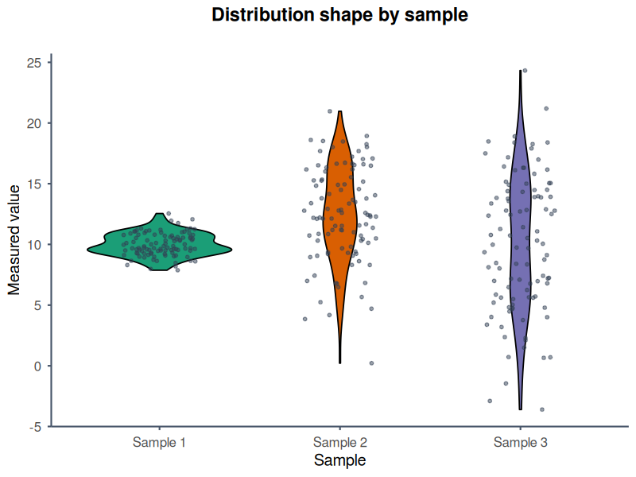

Show the observations
Overlay raw points so sample size and unusual values remain visible.
Compare the shape and spread of several distributions while retaining the individual observations behind them.
A violin plot combines a mirrored density estimate with summary statistics. It can reveal skew, multiple modes and differences in distribution shape that a box plot alone may hide. Density estimates are less reliable for very small samples, so add raw observations whenever possible.

Overlay raw points so sample size and unusual values remain visible.
Use the same scale, bandwidth interpretation and styling across related figures.
Use SVG or PDF when labels, outlines and colours need editing later.